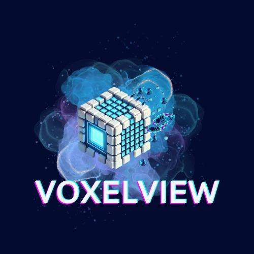
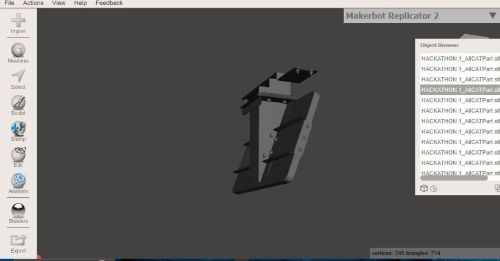

VoxelView

Descripción
VoxelView es un software para diseño industrial con visualización en Realidad Aumentada, creado para apoyar procesos de ingeniería y manufactura mediante la visualización, edición y desmontaje de modelos CATIA.
Reconocimiento
Participación a nivel nacional en INOVATEC 2024, modalidad Hackatec, representando la etapa regional con un software para Volvo enfocado en diseño industrial y realidad aumentada.
Características
- Visualización de modelos CATIA (.CATPart / .CATProduct)
- Desmontaje interactivo para ver piezas por separado
- Exportación en formato CATIA V5
- Interfaz intuitiva y amigable
Cómo usar VoxelView
- Carga tu archivo CATIA (.CATPart o .CATProduct).
- Visualiza el modelo en 3D, rota y acerca para explorar.
- Activa la función de desmontaje para ver las piezas.
- Exporta el modelo en CATIA V5 si lo necesitas.
Interfaz del software

Interfaz desarrollada en Python (GUI del software).
Realidad Aumentada
VoxelView cuenta con funcionalidad de Realidad Aumentada para visualizar modelos en 3D sobre el entorno real (opción disponible en la versión final).